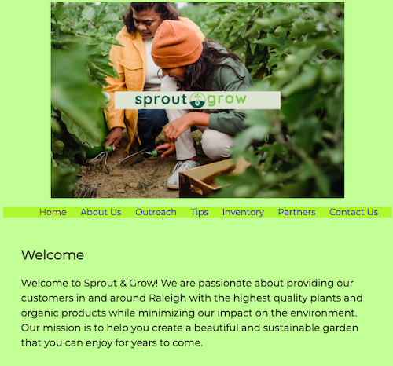

Sarah Manning
Freelance Graphic Designer
I am a young, up-and-coming graphic artist and designer looking for exciting and innovative opportunities to expand my experience and connect with other creative people and teams.
Featured Projects
View selected projects below. More information can be found at my GitHub page.
Sprout & Grow
As a project within the WEB-140 course, I created a website for a fictional greenhouse company named Sprout & Grow.
View project websiteWork Experience
Graphic Artist and Social Media Manager
Sublogic, Inc.
Summer 2023
Spent the summer as an intern for a technology consulting firm.
Managed social media accounts for the firm.
Optional list:
- Created graphic art pieces for marketing material
- Created web pages for marketing site
- Created and managed WordPress site
- Managed company social media accounts for the firm
- Responsible for primary customer interactions
Education
Wake Technical Community College - Raleigh, NC
Associate in Applied Science - Spring 2025 (expected)
On track to complete my Advertising & Graphic Design AAS degree.
Dean's List - Fall 2023
Leesville Road High School - Raleigh, NC
High School Diploma - June 2023
Completed with 3.98 GPA with major coursework in graphic design and graphic arts.